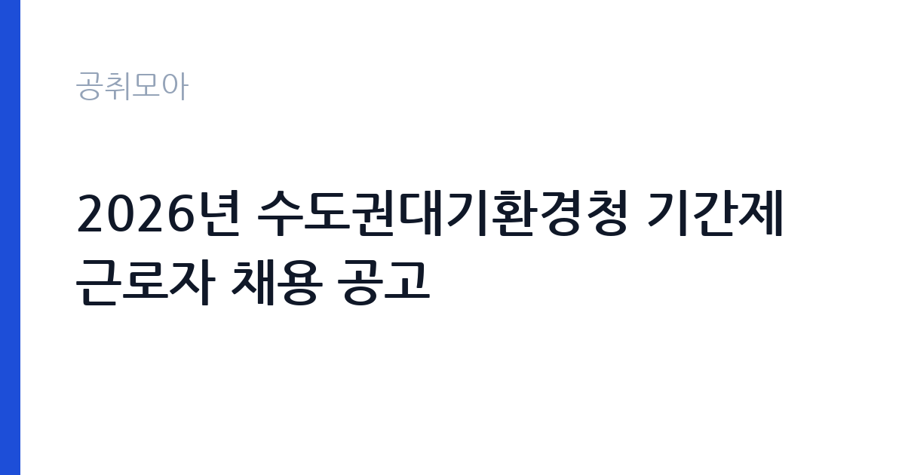

[국가기관] 2026년 수도권대기환경청 기간제근로자 채용 공고
기후에너지환경부 수도권대기환경청 · 경기 · 마감 2026-10-28 (D-9) · 출처 나라일터

한눈에 보는 모집 조건
| 기관 | 기후에너지환경부 수도권대기환경청 |
|---|---|
| 공고명 | 2026년 수도권대기환경청 기간제근로자 채용 공고 |
| 고용형태 | 기간제 |
| 근무지 | 경기 |
| 게시일 | 2026-10-20 |
| 마감일 | 2026-10-28 (D-9) |
지원자격, 이렇게 읽으세요
- 사무원 1명
- 접수 ~2026-10-28 마감
- 세부 조건은 원문 공고문 확인
이 공고는 채용 공고문에 모집분야와 고용형태, 접수기간, 응시방법이 명시된 짧은 형식입니다. 모집분야는 사무원 1명, 고용형태는 기간제근로자입니다. 기간제근로자는 공무원이 아니라 근로기준법이 적용되는 근로자 신분으로, 계약 기간이 정해져 있습니다. 응시 자격의 세부 조항은 첨부된 공고문에 있으므로 반드시 원문을 열어 확인하셔야 합니다. 일반적으로 이 기관의 기간제 채용에서는 학력 요건, 관련 자격, 병역 요건, 국가공무원법 제33조 결격사유 여부를 확인합니다. 접수 방법이 이메일이라는 점도 중요합니다. 담당자 주소로 제목과 파일명을 규칙에 맞춰 보내야 하며, 파일 형식이 규정과 다르면 접수로 인정되지 않을 수 있습니다.
이 공고의 포인트
이 자리의 매력은 기관의 성격에 있습니다. 수도권대기환경청은 수도권 대기질 개선을 전담하는 환경부 소속 기관으로, 자동차관리과는 운행차 배출가스 관리와 관련된 업무를 맡습니다. 사무원으로 들어가도 대기오염과 자동차 배출가스라는 구체적인 정책 영역을 가까이에서 보게 됩니다. 환경·자동차 분야로 진로를 잡은 지원자에게는 짧은 경력이라도 이력서에 쓸 수 있는 실무가 생깁니다. 두 번째는 근무지입니다. 경기 안산 일대에서 근무하며, 접수와 면접 절차가 이메일·서류 중심으로 간결합니다. 다만 기간제이므로 정규직 전환을 기대하기는 어렵습니다.
전형은 어떻게 진행되나
전형은 서류심사와 면접심사로 진행됩니다. 서류심사에서 응시자격 충족 여부와 제출서류 형식을 확인하고, 합격자에게 개별 통보한 뒤 면접을 봅니다. 이 기관의 기간제 채용은 1차 서류, 2차 면접의 단순 구조가 일반적입니다. 접수는 이메일로 이뤄지고, 마감 시각이 2026년 10월 28일 오후 6시로 명시돼 있습니다. 마감 직전에 보낸 메일은 서버 지연으로 도착이 늦어질 수 있으므로 최소 하루 전 발송을 권합니다. 발송 후에는 담당자에게 수신 확인을 요청하는 메일을 한 번 더 보내면 안전합니다.
원문에서 확인한 전형 방식
수도권대기환경청 공고 제2026-34호 기후에너지환경부 수도권대기환경청 자동차관리과에서 근무할 기간제근로자를 아래와 같이 공개모집 하오니, ○ 모집분야 : 사무원 ○ 고용형태 : 기간제근로자 ○ 접수기간 : 2026년10월20일 9시 ~ 2026년10월28일 18시 ○ 응시방법 : 이메일접수(leejw1120@korea.kr) 자세한 사항은 붙임 파일을 참고하시기 바라며, 채용공고문 관련 문의사항은 담당자(031-481-1323)로 연락바랍니다.
이런 분께 추천해요
- 경기 안산·시흥 일대에서 출퇴근이 가능한 분 — 수도권대기환경청 소재지 기준입니다
- 환경·자동차 분야 공공기관 실무를 경험하고 싶은 분 — 자동차관리과 소속입니다
- 짧은 계약이라도 즉시 근무를 시작하고 싶은 분 — 기간제 신분입니다
지원 전 체크리스트
- 첨부 공고문의 세부 응시자격을 직접 확인했는가 — 본문에는 요약만 있습니다
- 이메일 제목과 파일명 규칙을 지켰는가 — 형식 미준수는 접수 불인정 사유입니다
- 마감 시각이 2026-10-28 18시라는 점을 반영해 하루 전 발송했는가
- 국가공무원법 제33조 결격사유와 병역 요건을 충족하는가
모집 일정과 제출 타이밍
마감은 2026년 10월 28일 오후 6시입니다. 접수 시작일이 10월 20일 오전 9시이므로 준비 기간은 8일 남짓입니다. 권장 일정은 첫날 공고문 첨부파일을 내려받아 제출서류 목록을 만드는 것입니다. 둘째 날 이력서와 자기소개서 초안을 쓰고, 셋째 날 관련 증빙을 스캔합니다. 마감 이틀 전에는 이메일로 발송하고 수신 확인을 받으십시오. 면접은 서류 합격자에게 개별 통보되며, 통보 후 일정이 짧습니다. 접수 후에는 연락처를 정확히 남기고 전화와 메일을 자주 확인하십시오.
직무 이해하기: 국가기관
수도권대기환경청 자동차관리과는 수도권 지역의 자동차 배출가스 관리 업무를 맡습니다. 사무원은 이 업무를 행정적으로 뒷받침합니다. 구체적으로는 운행차 배출가스 점검 관련 자료 정리, 민원과 문의 응대 보조, 각종 통계와 실적 집계, 문서 접수와 발송, 회의와 교육 운영 지원 등이 핵심입니다. 과거 같은 부서의 기간제 채용 공고를 보면 운행경유자동차 배출가스 사후관리 업무 지원과 사무보조가 담당 업무로 명시되어 있었습니다. 현장 조사보다는 문서와 데이터를 다루는 비중이 높고, 부서 특성상 자동차와 대기환경 관련 용어를 빠르게 익혀야 합니다.
자기소개서 작성 팁
이 공고의 자기소개서는 짧고 실무적으로 쓰는 것이 유리합니다. 첫 문단에 지원 동기를 한 문장으로 쓰고, 곧바로 할 수 있는 일을 제시하십시오. 예를 들어 문서 작성, 엑셀 집계, 민원 응대 경험을 구체적으로 적는 것입니다. 본론에서는 업무 정확성을 보여주는 사례를 하나 넣으십시오. 반복 업무에서 오류를 줄인 방법, 여러 부서의 자료를 모아 하나의 표로 정리한 경험 같은 것이 좋습니다. 환경이나 자동차 분야에 관심이 있다면 관련 학습이나 자격을 한 줄로 덧붙이십시오. 마무리에는 계약 기간 동안 안정적으로 근무하겠다는 의사를 밝히면 됩니다. 과장된 포부보다 정확성과 성실성이 평가의 핵심입니다.
면접 준비 포인트
면접은 짧게 진행되는 경우가 많습니다. 질문은 지원 동기, 이전 근무 경험, 문서 작성 능력, 그리고 근무 시작 가능 시점입니다. 엑셀이나 한글 문서 작성 수준을 확인하는 질문이 나올 수 있으므로, 실제로 다뤄본 함수나 문서 종류를 말할 수 있게 준비하십시오. 공공기관 기간제 면접에서는 조직 적응과 근태가 중요하게 평가됩니다. 출퇴근 거리와 근무 가능 시간을 솔직하게 답하는 편이 좋습니다. 모르는 업무는 배우겠다고 답하고, 답변은 결론부터 짧게 하는 것이 기본입니다.
급여·근무조건 읽는 법
보수는 기간제근로자 보수 기준에 따라 정해지며, 원문 공고문에 월 보수액이 명시됩니다. 이번 공고 본문에는 금액이 공개되지 않았으므로 첨부 공고문에서 확인하셔야 합니다. 참고로 같은 기관의 다른 기간제 채용 사례를 보면, 시험연구원 가급에 월 2,803,000원을 제시하고 정액급식비·출장비·초과근무수당을 별도 지급한다고 안내한 공고가 있었습니다. 사무원 직종은 이보다 낮은 보수 단가가 적용되는 것이 일반적입니다. 기간제는 정규직 보수표가 아니라 별도 단가가 적용되고, 계약 기간이 정해져 있어 계약 만료 시 퇴직급여가 발생합니다. 4대 보험은 근로자 신분에 따라 적용됩니다.
자주 묻는 질문
- 기간제인가요?
네. 고용형태가 기간제근로자로 명시돼 있습니다. 공무원이 아니라 근로기준법이 적용되는 근로자이며, 계약 기간이 정해져 있습니다. - 접수는 어떻게 하나요?
이메일 접수만 안내되어 있습니다. 마감은 2026년 10월 28일 오후 6시이며, 제목과 파일명 규칙을 지키지 않으면 접수로 인정되지 않을 수 있습니다. - 급여는 얼마인가요?
본문에는 금액이 없고 첨부 공고문에 월 보수액이 명시됩니다. 같은 기관의 유사 기간제 공고에서는 월 280만원 수준의 사례가 있었습니다.
함께 보면 좋은 공고
[국가기관] 2026년 제5회 국립부곡병원 의무직 공무원 경력경쟁채용시험 공고 — 마감 2026-10-30[국가기관] 한국체육대학교 대학회계무기직원(미화원, 1명) 채용 공고 — 마감 2026-10-30[국가기관] 경북대학교 국제처 글로벌교육센터 2026년 제2회 한국어연수과정 신규 강사(기간제) 채용 공고 — 마감 2026-10-30출처: 나라일터 공개정보를 바탕으로 공취모아가 정리한 안내글입니다. 모집 조건·일정은 변경될 수 있으니 지원 전 반드시 원문 공고문을 확인하세요. 본 글은 정보 제공용이며 합격을 보장하지 않습니다.